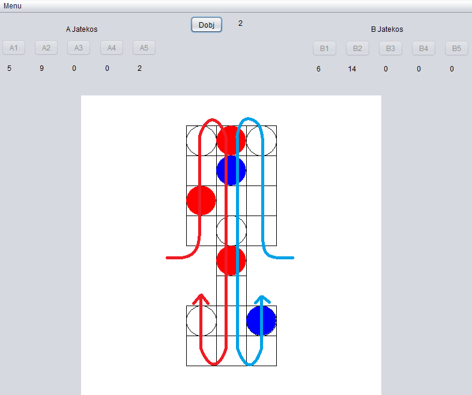

Royal Game of Ur v.0.9.b


- 
- Készítő: Pintér Baläzs
- Nyelv: Magyar
- Típus: Táblás Játék
- Platform: Windows 7, Windows 8, Windows 10
- Használt nyelv: Java
- Szükséges: Java Runtime Environment
- Forráskód: Github
- Letöltés: Mega | GoogleDrive
Leírás
A Royal Game of Ur egy ősi táblás játék. Minkét játékosnak 5 bábuja van és a starttól a célig mozgatják őket.
A tábla 3 részből áll. A bal oszlop az első játékosé, a középső a közös részleg, és a jobb oldali pedig a második játékosé.
Szabályok:
Mindkét játékos a saját körében dob, majd valamelyik bábuját mozgatja előre, ha tudja. Ha az egyik bábu rálép a másikra, akkor az újabb bábu megeszi az előzőt.
Ez azt jelenti, hogy a régi bábu vissza kerül a gazdája kezébe, míg az új a táblán marad. Vigyázat, a játékosok a saját bábujukat is megehetik. A közös területen már
mind a kettő játékos bábui együtt mozognak így a bábulevétel esélye is megnő. Amikor egy figura eléri az alsó részt, ismét bekerül a játékos zónájába. Innen már csak két lépés a cél.
Figyelem, a célvonalat csak akkor lehet átlépni, ha pontosan annyit dob a játékos, ahány lépés maradt a célig. Tehát ha 4 lépés maradt, akkor 4-et kell dobnia. Ha például 5-öt dob, akkor nem mozdulhat az a bábu.
Ha egy figura beért a célba, onnantól kezdve az a játékos trófeája lesz.
Az a játékos nyer akinek először ér célba az összes bábuja. Oh és majdnem elfelejtettem, ha egy karikás mezőre kerül a bábu, akkor az egy extra kört ér. Jó szórakozást!
Jegyzet:
Ezzel a projekttel a canvas használatát gyakoroltam, ez az egyik legelső projektem.
Ismert hibák:
Ha az első játékos nyer, a játék folytatódik addig amíg a második játékos is lép egyet.
Ha a felhasználó mozgatja, vagy átméretezi az ablakot, akkor a pálya szét fog esni a canvas miatt.